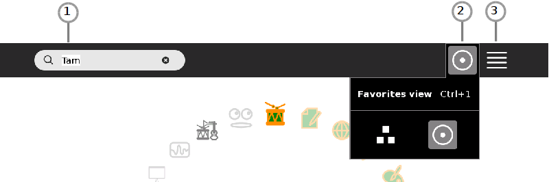
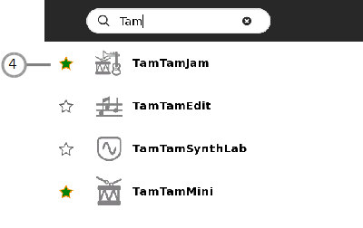
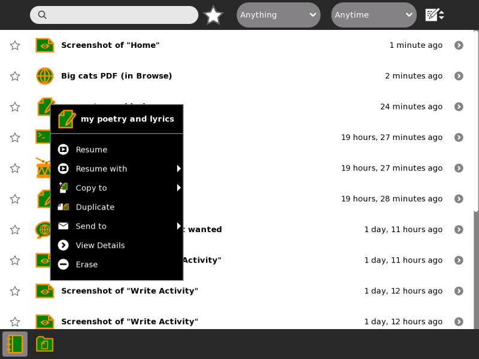
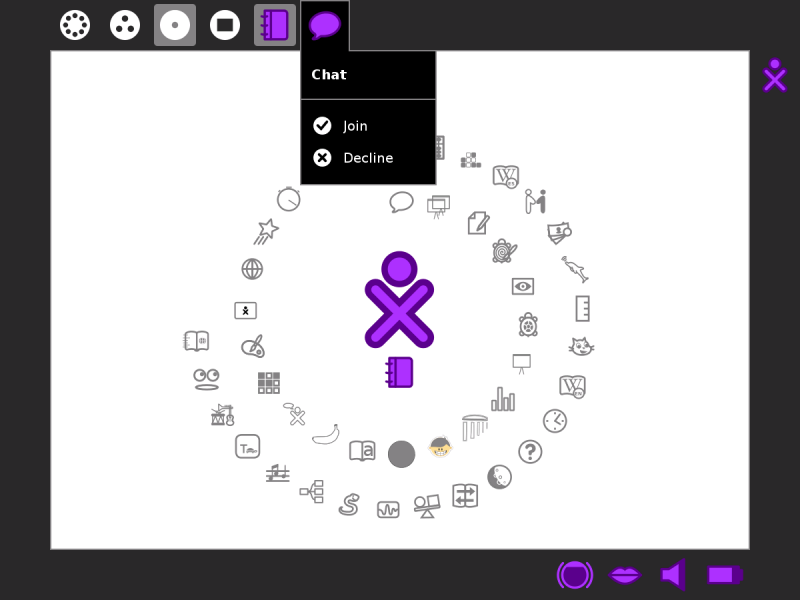

Launching Activities¶
You can launch an Activity in four different ways:
Click the Activity icon in the Home View.
Resume your previous work with an Activity from the Journal.
Join a shared Activity from the Neighborhood View.
Accept an invitation by clicking the invitation icon on the Frame.
When you launch an Activity, its icon flashes in the middle of the screen while it loads.
Once the Activity is running, you will be placed into its Activity View.
Launching Activities from the Home view¶
To get to the Home View,
click the Home icon on the Frame
or press the F3 key. On the XO keyboard this key has a single dot
 , and is one of the view keys .
, and is one of the view keys .
Then click on the icon of the activity you want to start. If you aren’t sure you have the right activity, hover your cursor over the icon for a few seconds and a label will appear with the activity name.
If you’ve run the Activity before, clicking the icon will resume with your last Journal entry. If you click the right menu button or hover the cursor over the icon for several seconds, a menu appears with other Journal entries you made with the activity, and an option to “Start new”.
If you don’t see the Activity’s icon, click the menu icons (2) (3) to change how the Home view displays activities. Or type part of the Activity’s name in the search box (1).

In list view mode (3) you can click the star (4) next to an Activity’s name to add/remove it as a favorite. Favorite Activities appear in the favorites view.

If the Activity fails to start, you will be returned to Home View.
Resuming from the Journal¶
Click the activity’s icon or click Resume on its hover menu.

You can also launch some journal entries in a different activity using the hover menu. For example, you can resume an image you made in the Paint activity in Etoys or Browse.
You can click the first drop-down menu in the Journal to only show certain kinds of entries or those made with a particular activity.
Joining an Activity by accepting an invitation¶

Click Join in the hover menu on the Frame.
Note
Try not to open more than three Activities at one time or your computer may go slow.